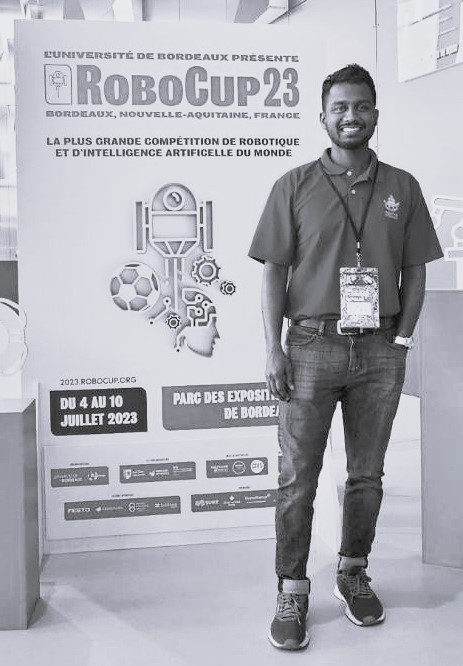

Dileep Sivaraman
Researcher, Medical Robotics | Mahidol University
Center for Biomedical and Robotics Technology (BART LAB)
About
I am a researcher currently working as a foreign expert at Mahidol University, Thailand. My work focuses on medical robotics, sensor fusion, control theory, and surgical robotics, with an emphasis on integrating bio-inspired approaches and advanced control systems to improve healthcare procedures.
Currently, I work at the Center for Biomedical and Robotics Technology (BART LAB), Department of Biomedical Engineering, Faculty of Engineering, Mahidol University, focusing on bio-inspired needle systems for medical applications.
I am actively seeking research collaborations in the fields of medical robotics, sensor fusion, and control systems. I am passionate about mentoring students and sharing knowledge to help them grow in these fields.
Faculty of Engineering, Mahidol University
25/25 Puttamonthon 4 Road
Salaya, Nakorn Pathom 73170
Thailand
25/25 Puttamonthon 4 Road
Salaya, Nakorn Pathom 73170
Thailand
Ph.D. Graduate, BART LAB, Mahidol University
Biomedical Engineering, Medical Robotics
dileepsivaraman89@gmail.com
dileep.siv@mahidol.ac.th
dileep.siv@mahidol.ac.th
News
Aug 07, 2025
Paper accepted in Systems Science & Control Engineering (Taylor & Francis) titled "Dynamic Order Selection Analysis in Adaptive Polynomial Kalman Filtering: Implementation and Integration of Sensor Data and Hybrid Image Processing for Bioinspired Needle Systems"
Aug 01, 2025
Joined as Foreign Expert at the Faculty of Engineering, Mahidol University
Feb 17, 2025
Successfully defended Ph.D. thesis in Biomedical Engineering at Mahidol University
Jan 2024
Published "Adaptive Polynomial Predictive Filter for Sensor Data Estimation and Prediction in Interference Environment" in IET Control Theory and Applications
Jan 2024
Published "A pack hunting strategy for heterogeneous robots in rescue operations" in Bioinspiration & Biomimetics
Jul 2023
Participated in RoboCup 2023 held in Bordeaux, France as a member of the BART LAB ROBOTICS Team